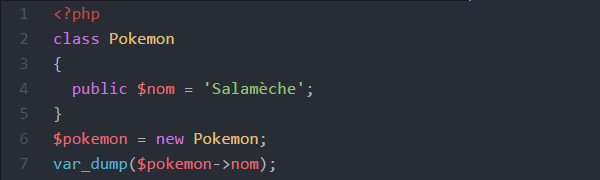
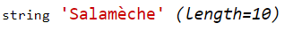
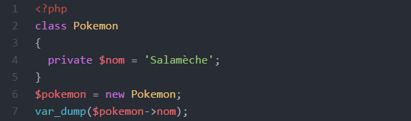
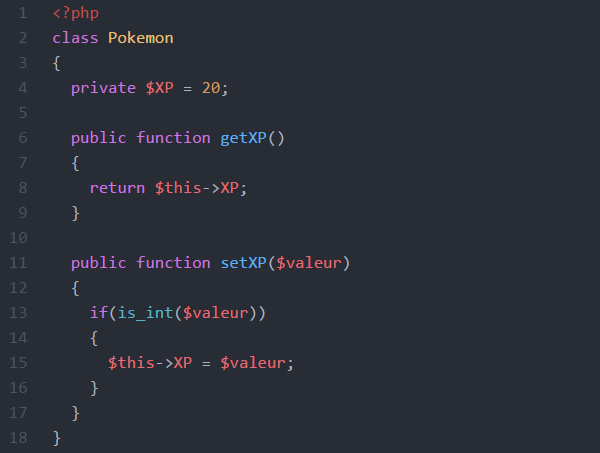
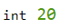
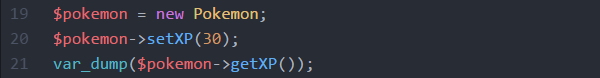
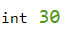
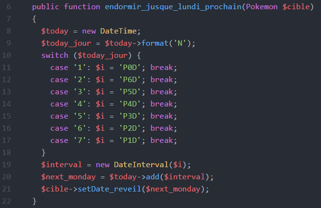
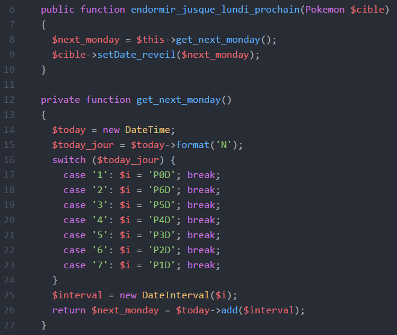

C'est une "technique" spécifique à la POO. Il s'agit de bloquer l'accès direct à un attribut ou une fonction depuis l'extérieur de sa classe.
La principale utilité de l'encapsulation est l'assurance de la validité du type et de la valeur des attributs des objets.
Si l'on reprend l'exemple des Pokémon, l'attribut XP est un entier (int).
Si par mégarde, a un endroit du code (dans l'index.php par exemple),
on lui attribue une chaîne de caractères (erreur typique: "20" au lieu de 20),
il y aura un bug lorsqu'un pokémon appellera la fonction attaquer() et que PHP tentera de faire XP + 1.
En ayant recours à l'encapsulation, un message d'erreur s'affichera au moment où l'on essayera d'attribuer une valeur de type incorrect à un objet.
Par ailleurs, tout le monde sait qu'un pokémon, ça évolue !
Mettons que l'on veuille qu'un pokémon évolue lorsqu'il atteint les 50 pts d'XP.
Grâce à l'encapsulation, il suffira de préciser qu'au moment ou XP >= 50,
le pokémon doit appeler la fonction evoluer().
Lorsqu'un attribut ou une fonction est précédé(e) du mot-clé public, il n'y a pas d'encapsulation : on peut donc y accéder depuis n'importe quel endroit du code et assigner n'importe quelle valeur aux attributs.  
Lorsque le mot-clé private est utilisé, il y a encapsulation : on ne peut pas y accéder de manière directe en dehors de la classe. 
Le mot-clé protected est quasi identique à private,
sauf que les objets créés avec une classe qui hérite d'une autre ont accès aux attributs
et fonctions "protected" de la classe parent.
On parlera de l'héritage plus loin... c'est juste pour info, là !
Encapsulons l'attribut XP avec le mot-clé private.
C'est une bonne chose de faite. Mais un attribut totalement inaccessible
n'a pas lieu d'être ! On va donc créer un accès indirect
obligeant le passage par une étape de vérification.
Cet accès indirect ce fait grâce à un accesseur et un mutateur (getter et setter). Il s'agit de deux fonctions que l'on va ajouter dans la classe. La première servant à accéder à la valeur d'un attribut, et la seconde, à la modifier après vérification. 
Ceci : donnera donc ça :  et ceci :  donnera ça : 
Dans ce cas là, l'utilité est moins évidente. Je dirais que c'est plus
une commodité rendant le code plus clair
pour toute personne ayant à travailler dessus.
C'est également intéressant lorsque l'on utilise un IDE qui génère
automatiquement la documentation sur les classes.
Une fonction private est une fonction interne à une classe,
qu'on n'aura jamais besoin d'appeler en dehors de celle-ci.
Pour l'exemple, mettons que la classe pokemon ait une fonction
public endormir_jusque_lundi_prochain()
(Sorry, panne d'inspiration...) :

Il peut être intéressant d'isoler le morceau de code qui calcule la date du prochain lundi pour pouvoir l'utiliser dans d'autres fonctions au sein de cette classe, et de la déclarer private par soucis de clareté (en voyant le private, on sait que c'est une fonction interne à la classe, "secondaire") : 